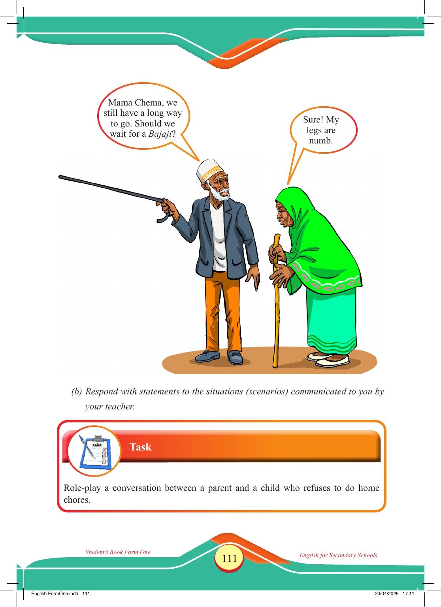

Accessible text transcript - page 111
Use the reader's read-aloud controls or select an individual segment below.
Printed book page 111. Student’s Book Form One English for Secondary Schools An elderly blind man with a white cane stands beside an elderly woman in a green hijab who leans on a walking stick as they travel together. Mama Chema, we still have a long way to go. Should we wait for a Bajaji? Sure! My legs are numb. (b) Respond with statements to the situations (scenarios) communicated to you by your teacher. Task Role-play a conversation between a parent and a child who refuses to do home chores. Student’s Book Form One English for Secondary Schools Return to the page image